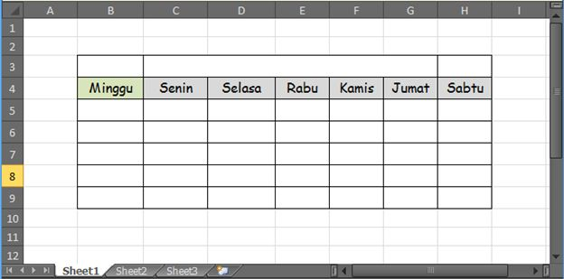
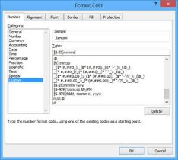
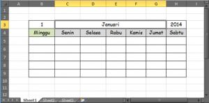
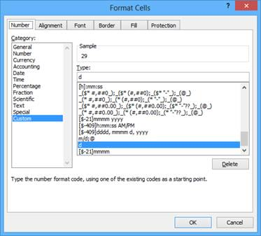
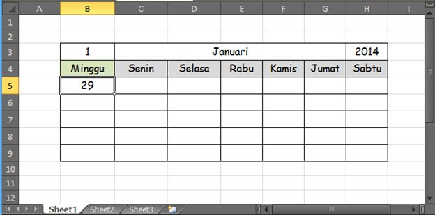
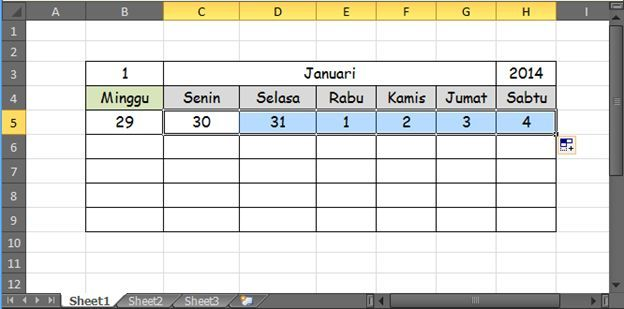
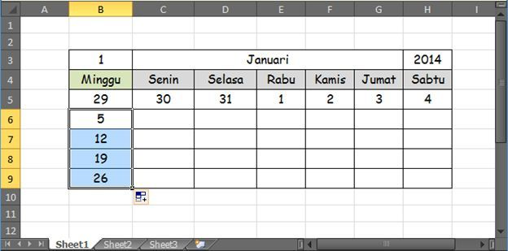
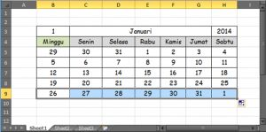
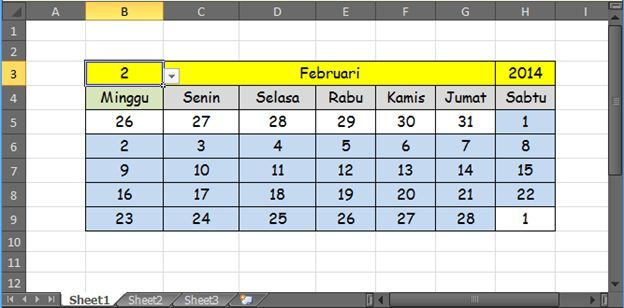

Membuat kalender dengan Excel
Kalender bulanan dibuat dengan kombinasi DATE, WEEKDAY, dan rumus yang mengisi tanggal otomatis berdasarkan bulan dan tahun yang dipilih.
Langkah praktik
- Sediakan sel tahun dan bulan.
- Tanggal awal bulan: =DATE(tahun;bulan;1).
- Tentukan kolom hari pertama dengan WEEKDAY.
- Isi tiap sel dengan tanggal dengan rumus yang menambah 1 hari, dan sembunyikan tanggal di luar bulan memakai IF(MONTH(...)=bulan; ...; "").
- Gunakan Conditional Formatting untuk menandai hari Minggu atau hari ini.
Tangkapan layar praktik








